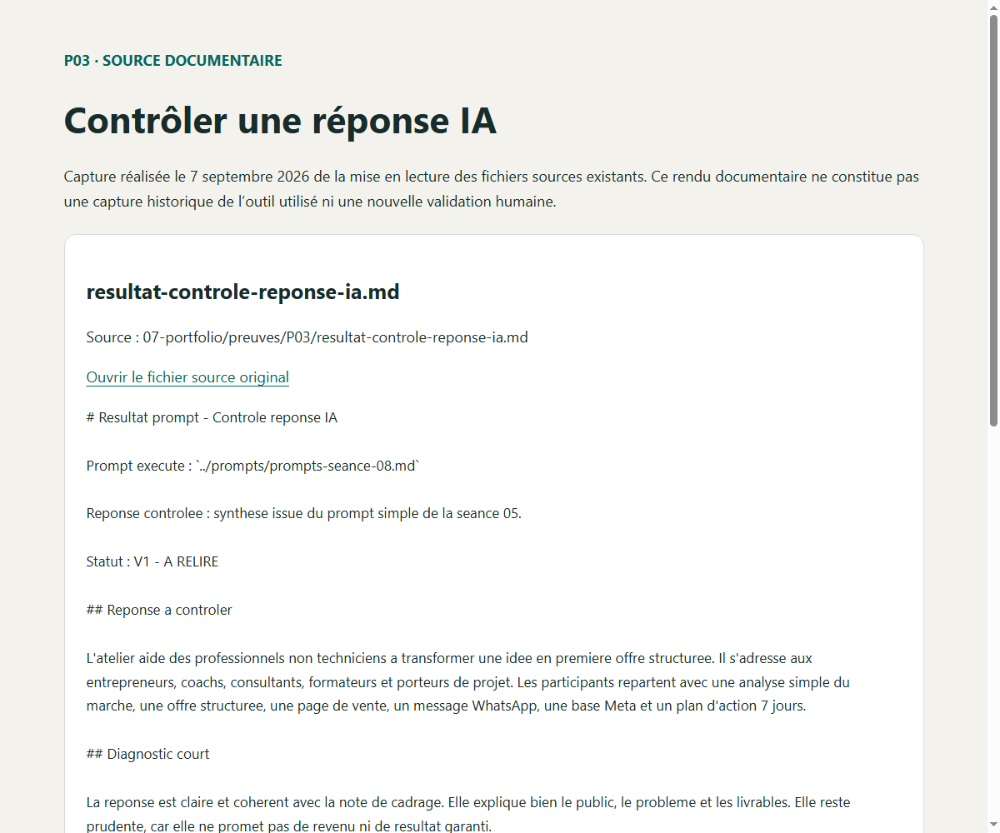
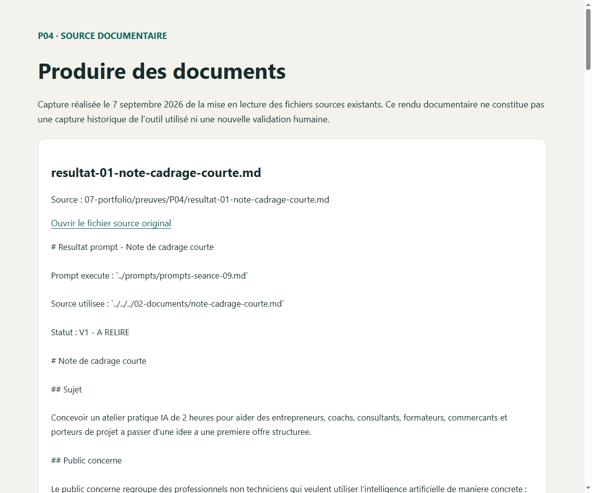
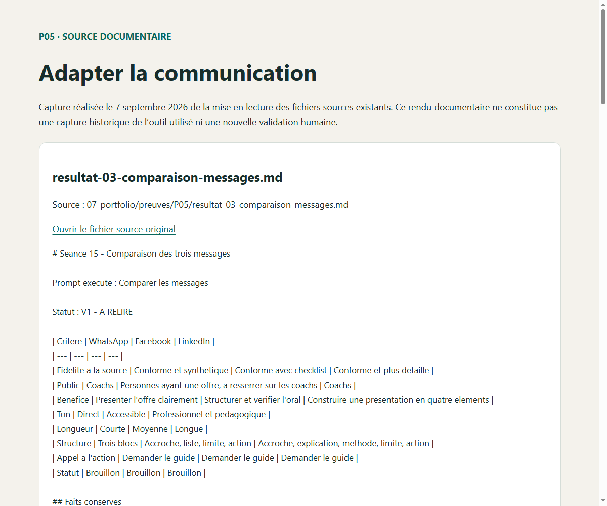
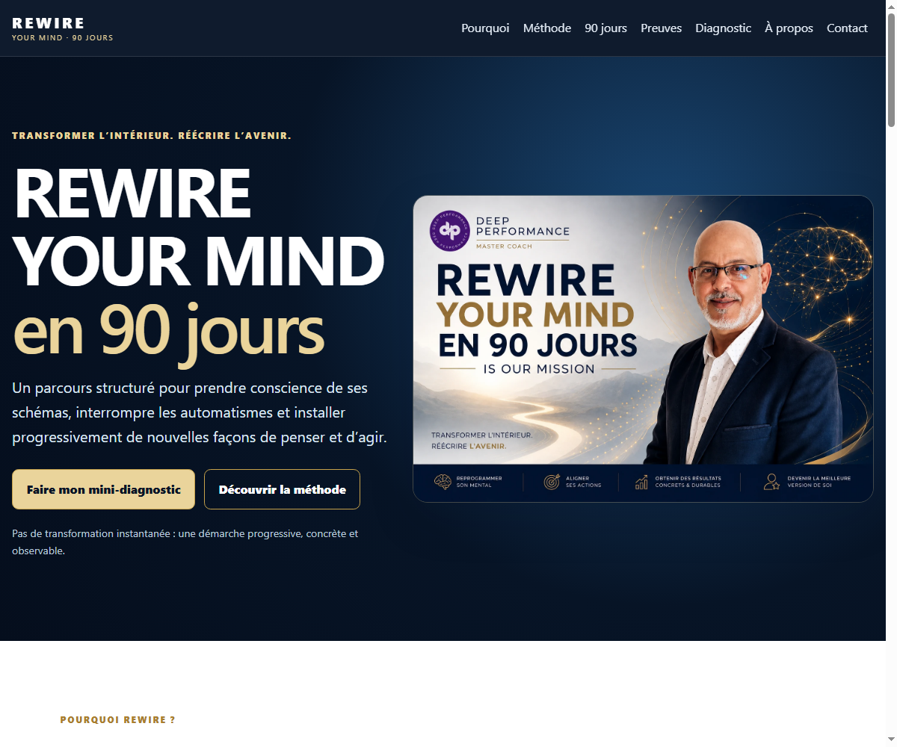
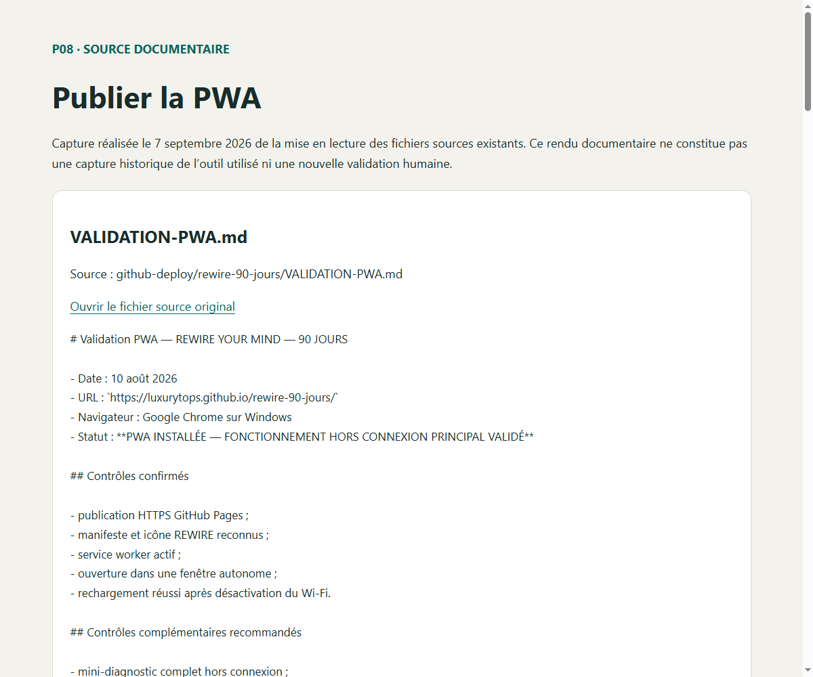
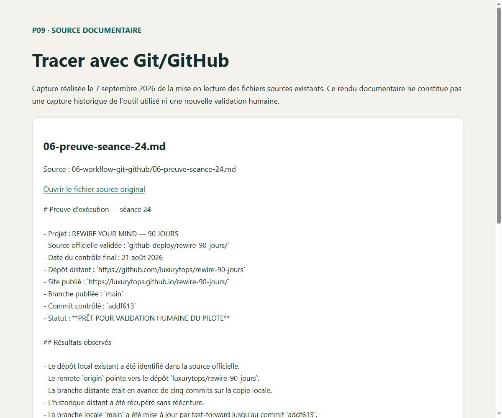

Point de départ
Mini-site V1 local
Une page HTML structurée, une identité visuelle responsive et un mini-diagnostic local. Les quatre mouvements REWIRE étaient directement intégrés dans le HTML.
REWIRE YOUR MIND 90
J’ai transformé une intention professionnelle en une présence numérique structurée, testée, documentée et publiée. L’IA m’a assisté ; je suis resté responsable du besoin, des contenus, des contrôles et des décisions finales.
01 · Mon projet
Je développe un programme d’accompagnement personnel et professionnel destiné à aider les participants à transformer leurs schémas mentaux, leurs habitudes et leurs intentions en changements observables.
Rendre REWIRE compréhensible, crédible et accessible grâce à une présence numérique structurée, testée, documentée et progressivement améliorée.
02 · Avant / après
Point de départ
Une page HTML structurée, une identité visuelle responsive et un mini-diagnostic local. Les quatre mouvements REWIRE étaient directement intégrés dans le HTML.
Transformation
Les données sont séparées dans un fichier JSON, chargées avec fetch(), vérifiées puis affichées avec les API du DOM.
Résultat contrôlé
Manifeste, icônes, service worker, GitHub Pages, installation dans Chrome et fonctionnement principal hors connexion documenté.
Limite reconnue : cette publication prouve l’évolution de la présence numérique. Elle ne constitue pas une preuve de vente, de conversion ou d’efficacité du programme d’accompagnement.
03 · Mon portfolio
Les preuves des premiers modules montrent mes fondations méthodologiques. Les Modules 05 et 06 montrent leur application au projet REWIRE.
Relier besoin, public, livrables et preuves attendues.
Contribution humaine documentée : Cadrage de l’objectif et sélection des livrables.
Pièce historique repérée le 25/08/2026. Consultation publique autorisée le 07/09/2026 ; statut historique et limites conservés.
Voir la preuve P01 en images →

Passer d’une demande simple à une consigne cadrée et contrôlable.
Contribution humaine documentée : Choix du contexte et structuration des consignes.
Pièce historique repérée le 25/08/2026. Consultation publique autorisée le 07/09/2026 ; statut historique et limites conservés.
Voir la preuve P02 en images →

Identifier les manques, corriger et éviter une diffusion non vérifiée.
Contribution humaine documentée : Relecture critique et choix des corrections.
Pièce historique repérée le 25/08/2026. Consultation publique autorisée le 07/09/2026 ; statut historique et limites conservés.
Voir la preuve P03 en images →

Transformer une idée en note de cadrage et fiche projet améliorées.
Contribution humaine documentée : Cadrage et révision des documents.
Pièce historique repérée le 25/08/2026. Consultation publique autorisée le 07/09/2026 ; statut historique et limites conservés.
Voir la preuve P04 en images →

Comparer plusieurs canaux sans modifier les faits ni les promesses.
Contribution humaine documentée : Choix des canaux et contrôle des promesses.
Pièce historique repérée le 25/08/2026. Consultation publique autorisée le 07/09/2026 ; statut historique et limites conservés.
Voir la preuve P05 en images →

Transformer le cadrage REWIRE en une première réalisation web.
Contribution humaine documentée : Choix des contenus et de l’identité visuelle.
Pièce historique repérée le 25/08/2026. Consultation publique autorisée le 07/09/2026 ; statut historique et limites conservés.
Voir la preuve P06 en images →
Passer vers une V2 dynamique avec JSON, JavaScript et contrôles.
Contribution humaine documentée : Définition des évolutions et contrôle du rendu.
Examiner les quatre mouvements JSON · Examiner le code JavaScript
État technique corrigé le 06/09/2026 ; validation humaine finale à obtenir.
Voir la preuve P07 en images →

Contrôler une application installable et son fonctionnement principal hors connexion.
Contribution humaine documentée : Contrôle humain historique rapporté le 10 août 2026 ; recette actuelle à renouveler.
Lire la trace PWA datée et ses limites
Validation historique du 10/08/2026, distincte de la recette actuelle.
Voir la preuve P08 en images →

Documenter source, versions, commit, Pull Request et validation humaine.
Contribution humaine documentée : Suivi des versions et revue humaine historique rapportée le 21 août 2026.
Consulter le commit historique du suivi du 21/08/2026
Trace Git publique ; validation finale du portfolio non attestée.
Voir la preuve P09 en images →

04 · Ma méthode
Je décide
Je définis le destinataire, les contenus métier, les priorités, les informations diffusables et l’acceptation d’une proposition.
L’IA m’assiste
Elle m’aide à organiser les prompts, proposer du code, analyser des erreurs, préparer des tests et documenter le projet.
L’humain contrôle
Les informations, les résultats, les droits, le fonctionnement réel et la validation finale restent sous responsabilité humaine.
Cadrer → inventorier → produire → tester → corriger → documenter → faire contrôler
05 · Mes acquis
06 · Prochaine étape
Organiser un test d’usage contrôlé de la présence numérique REWIRE, recueillir des retours autorisés et anonymisés, effectuer une correction prioritaire, la tester et la documenter dans une Pull Request ou une trace équivalente.
Critère observable : une correction reliée à un retour réel, testée, documentée et soumise à une revue humaine.
Voir le projet REWIRE